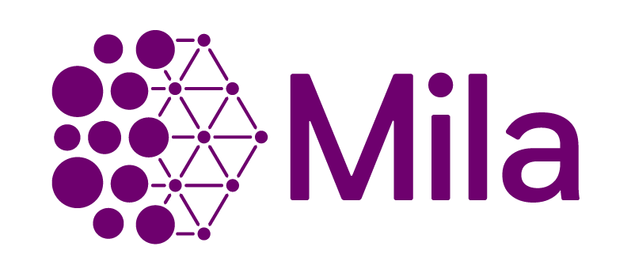
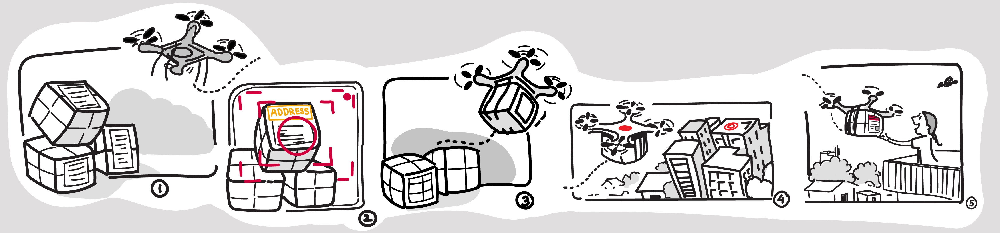
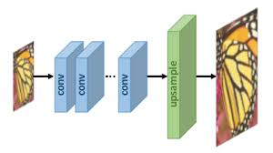

Hi, I am
Atharva Chandak.
I build intelligent systems.
I'm an ML Engineer at eBay, where I work on vision-language models that figure out what a seller is actually listing, and on making LLMs cheaper to serve. Before that I built an LLM assistant and credit-card services at Wells Fargo, and did research at Mila, CMU, Harvard and IISc.
Experience
ML Engineer 2
eBaySellers describe the same product in countless ways. My work is figuring out which catalog product a listing really is, so recommendations and the buyer experience start from the right product.
- Built multimodal models that use a listing's photos and text together to find its catalog match. Better matches fed recommendations and showed up as an eight-figure lift in GMV.
- Pushed precision up while widening coverage in several categories at once, which usually means trading one against the other.
- Fine-tuning open vision LLMs (Qwen3, Gemma 4) to read the small visual details that separate one collectible from another.
- Optimised and deployed our LLMs, which raised throughput (TPS) by 30%, improved GPU utilisation and cut long-term serving cost.
- Prototyped a shopping assistant with memory and retrieval, as a first look at what agentic help could do for buyers.
SWE
Wells FargoTwo years on the merchant lending side of a large bank, split between services that move money and the first LLM product I took all the way to production.
- Started with a prototype assistant for merchant workflows and stayed with it through hardening and launch. Loan applications finished up to 30% faster.
- Worked on credit-card services that handle over a million transactions a month for thousands of merchants.
- Wrote the POS EMI microservices that let a purchase at the counter be split into installments, plus analytics so merchants can see how their business is doing.

Research Assistant
Mila / UdeMA detector trained on new conditions tends to forget the old ones, which is a problem for a car that drives through sun, rain and night. My thesis was about stopping that.
- Cut catastrophic forgetting in object detection by about three quarters.
- Tested on-device incremental learning for robots. Transformer detectors lost around 4 mAP50 points when adapting to new domains, where CNNs lost nearly 15.
- On the CLAD-D benchmark the approach beat baselines by roughly 15%.

Research Intern
Airlab, CMUTartanAviation records real aircraft around airports with cameras, ATC radio and ADS-B. Drawing aircraft boxes from scratch at that scale is impractical, so I worked on how the labels get made.
- Wrote the vision pipeline that turned footage from about 550 sequences into over 3 million high-resolution images.
- Built the camera calibration and auto-labeling framework. Calibration ties each camera to the airfield so ADS-B positions land in the image, and those projections help check the detector's output. The result was 700k+ aircraft bounding boxes.
Summer Intern
Wells FargoA summer project built around one question: can a customer ask about a home loan out loud and get a useful answer?
- Built the whole voice loop. Speech-to-text takes the question in, an action server decides and composes the reply, and TTS speaks it back.
- Wrote the NLP pipeline: intent classification landed in the low 90s on F1 and entity extraction in the low 80s.
- Queries were resolved in up to about two thirds less time.
Visiting Research Intern
Visual Computing Group, Harvard- Contributed to PyTorch Connectomics, adding cellpose model support for neuron instance segmentation.
- Explored semi-supervised methods and designed an affinity learning + transformer pipeline to improve 3D segmentation accuracy.
Research Intern
AIRL, IISc- Worked on Generalized Continual Zero-Shot Learning, integrating incremental learning with ZSL for realistic DL deployment.
- Extended the setup to task-free, out-of-distribution generalization across diverse Computer Vision tasks.
Education
BITS Pilani
Bachelor of Engineering in Computer Science
Coursework: Data Structures & Algorithms, Cloud Computing, Machine Learning, Deep Learning, Computer Vision, Natural Language Processing.
Research
AdQuestA: Knowledge-Guided VQA for Advertisements
Questions about an ad often depend on knowledge that is not in the image. We built the first ad-specific VQA dataset (94k+ QA pairs over 17k images) and a framework that adds retrieval and LLaVA's implicit knowledge. It roughly doubles QA accuracy over earlier methods and beats models ten times its size at pattern matching.
Image, Speech, and ADS-B Trajectory Datasets for Terminal Airspace Operations
Small, distant aircraft are hard for current detectors. The paper pairs camera images with ATC speech and ADS-B trajectories to support work on detection, detect-and-avoid and trajectory forecasting. At CMU's AirLab I worked on the perception side: calibrating the cameras to the airfield so ADS-B tracks project into the image, then using that geometry to verify detections and label 700k+ aircraft across 3.1M images.
LIFT-Net: Action Recognition Across Lighting Conditions
Recognising actions in poor light is hard because raw frames carry little signal. LIFT-Net is a dual-pathway transformer that reads raw and illumination-corrected frames side by side. It beat the state of the art on HMDB51, UCF101, ARID (95.21%) and InfAR.
More on Google Scholar.
Projects

Drone for Parcel Delivery
A simulated delivery drone for IIT Bombay's E-Yantra competition. I worked on its navigation and control and on QR-based detection to find drop points. We finished in the top 5.

Image Super Resolution
Turning low-resolution images into sharp ones with GANs. I read the SRGAN and ESRGAN papers and implemented both.
Technical Arsenal
Languages
ML / AI
Frameworks
Cloud & Tools
Major Achievements
- Top 30 in India in IMC Prosperity 2, a global algorithmic trading competition by IMC Trading.
- 3rd Place in AI RoboSoccer Competition (148 teams) using PPO-based RL agents.
- Ranked 598 and 2449 out of 1.23 million students in JEE Main and Advanced.
- Top 5 in IIT Bombay's E-Yantra Robotics Competition.